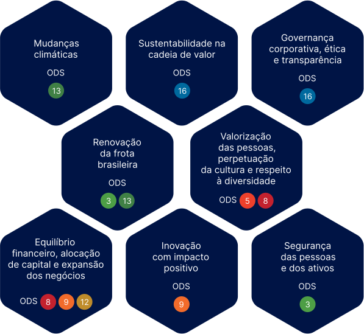

Materialidade
Este relatório se baseia nos temas ESG mais relevantes, mapeados seguindo diretrizes de referência no mercado
A SIMPAR torna pública aos seus investidores, clientes, colaboradores e parceiros uma síntese de seus resultados, investimentos e projetos estratégicos durante o ano de 2021 por meio deste Relatório Anual Integrado.
Esta versão web resumida sumariza conteúdos presentes no documento completo (acesse clicando aqui), construído com base em diversas diretrizes e metodologixas:
- Normas da Global Reporting Initiative (GRI)
- Framework de Relato Integrado (<IR>) da Value Reporting Foundation (VRF)
- Normas SASB, da VRF
- Recomendações do Task Force on Climate-related Financial Disclosures (TCFD)
- Dados CDP, Disclosure Insight Action
- International Financial Reporting Standards (IFRS)
- Objetivos de Desenvolvimento Sustentável e Pacto Global das Nações Unidas.
A SIMPAR tem oito temas materiais de sustentabilidade, definidos após processo de identificação, priorização, análise e validação feitos com a participação de colaboradores, líderes, investidores, conselheiros de administração, consulta a documentos internos e estudos setoriais.
Confira os temas e sua relação com os ODS da ONU.
